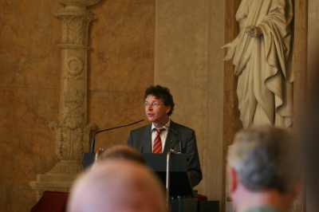
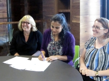

|
Welcome
The mission of DARIAH is to enhance and support digitally-enabled research across the humanities and arts. DARIAH aims to develop and maintain an infrastructure in support of ICT-based research practices.
DARIAH is working with communities of practice to:
- Explore and apply ICT-based methods and tools to enable new research questions to be asked and old questions to be posed in new ways
- Improve research opportunities and outcomes through linking distributed digital source materials of many kinds
- Exchange knowledge, expertise, methodologies and practices across domains and disciplines
|
|
Latest News
The European arts and humanities infrastructure projects DARIAH and CLARIN jointly organised and convened the conference Supporting the Digital Humanities 2010 (SDH 2010) and the 2010 Networking Event for European Research Infrastructures (NEERI 2010) from October 19-21, 2010 at the Technical Universitiy of Vienna. Whereas SDH2010 focused on the types of research made possible by research computing, NEERI 2010 centred on the technical, architectural and social challenges of building the infrastructure. SDH 2010 On October 19th and 20th, 2010, approximately 160 delegates attended two days of presentations and discussions on a range of topics at the cutting edge of humanities research, focusing on how infrastructures can broaden and enrich research activities across the spectrum of the arts and humanities. The conference began with an interesting keynote from Neil Fraistat, director of the Maryland Institute for Technology in the Humanities and Co-chair of centerNet, on the subject of "Digital Humanities Centres as Cyberinfrastructure." Professor Fraistat emphasized the importance of DH centres in providing infrastructure services to the wider community - and in turn, how the implementation of such infrastructures can break down the tendency for resources to become 'siloed' in their local context. The parallel sessions of SDH 2010 covered such diverse topics as manuscript studies, linguistics, musicology, archaeology and socio-economic history. Delegates from many international universities and research institutions presented aspects of contemporary research in the context of research infrastructures. Many discussions focused on how to take arts and humanities research to the proverbial 'next level' in terms of its degree of integration and interoperability with similar resources at different locations.
|
Thursday, 14 October 2010
 The role of social sciences and humanities in the European Research Area underscores its growing contribution on how to best respond to the challenges facing Europe. The role of social sciences and humanities in the European Research Area underscores its growing contribution on how to best respond to the challenges facing Europe.
For this reason the report, Evaluation of the Impact of the Framework Programme on the Formation of the European Research Area (ERA) in Social Sciences and Humanities (SSH), has been released by the European Commission.
The report presents the results of a study aiming to evaluate the contribution of the SSH parts of the Framework Programme on the ERA. It also details the research carried out in the third call of the socio-economic Research Key Action of the Fifth Framework Programme as well as the 'Citizens and Governance in a Knowledge-Based Society' part of the Sixth Framework Programme.
The study examined the impacts of these programmes in four domains:
- the research policies for SSH in Member States,
- the structuring effects of the new instruments,
- the importance of the support for research infrastructures in the context of the SSH programme,
- the impact of the programme on the careers of participating researchers.
 Following the recent DARIAH Management board meeting at Trinity College Dublin on Friday October 1st, 2010, the director of the Irish Research Council for the Humanities and Social Sciences (IRCHSS), Dipti Pandya, signed the DARIAH Memorandum of understanding (MoU), expressing full support of the DARIAH project and its future both in Ireland and across Europe.
The MoU helps lay the path towards the construction of DARIAH under the European Research Infrastructures Consortium Framework (ERIC).
In addition to IRCHSS director Pandya, Jane Ohlmeyer (IRCHSS/Trinity College Dublin) and Maria O'Brien (IRCHSS) were also on hand for the signing ceremony, which was attended by representatives from the university sector, the Irish research and IT sectors, along with members of the DARIAH management board.
Professor Ohlmeyer had this to say about the MoU signing: "This is an important moment for the continuing development and enhancement of the digital humanities in Ireland. We believe strongly in the potential of DARIAH for enabling and supporting research."
Such sentiments were echoed by DJ McCloskey from IBM Ireland's LanguageWare Group: "We love what's happening in the digital humanities right now. The overlap between what IBM is doing and what DARIAH is doing points the way to fascinating future collaborations". These could include wider application of tools developed for natural language processing, said McCloskey.
Representatives of the FP7 Cultura project were also on hand. Dr. Owen Conlan, of Trinity College's School of Computer Science and Statistics, a partner in Cultura, underlined the importance of personalisation, social networking analysis and community building for leveraging the engagement of users with all manner of digital humanities artefacts and collections. "Computer Science and Humanities research complement each other very well" said Dr. Conlan, pointing to the interplay between each and how they serve to "push each other to constantly innovate and develop."
DARIAH will hold it's final conference in Vienna, October 19-21, 2010.
Date: Tuesday 19th and Wednesday 20th October 2010
Venue: Technical University of Vienna, Austria
Website: http://ztwweb.trans.univie.ac.at/sdh2010 SDH2010 is the first conference that is jointly organized by the CLARIN and DARIAH initiatives, which are building the European research infrastructure for the humanities and related disciplines. SDH2010 aims bring together infrastructure providers and users from the communities involved with the two infrastructure initiatives. The conference will consist of a number of topical sessions where providers and users will present and discuss results, obstacles and opportunities for digitally supported humanities research. Participants will be encouraged to engage with honest assessments of the intellectual problems and practical barriers in an open and constructive atmosphere. SDH2010 is organized together with NEERI2010, the second European networking event for research infrastructures. Whereas SHD2010 will focus on the types of research made possible by research computing, NEERI2010 will focus on the technical, architectural and social challenges of building the infrastructure. NEERI2010 is a one-day event on Thursday October 21st, also at the Technical University of Vienna, Austria.
Projects Magazine, a leading publication on European science, technology and innovation, has recently published an article about DARIAH. The article features an interview with DARIAH project coordinator Peter Doorn in which he discusses the goals of DARIAH and its importance for the future of arts and humanities research. From the article: "We are building an infrastructure to provide the basic facilities on which researchers can work. Physical institutions like libraries, archives and museums are, in a sense, arts laboratories. In the digital age we need a parallel to that, a virtual laboratory for humanities research. That is what we are creating." Download the complete article here
|
|
|
|
|
|
Page 23 of 30 |
|
Information brochure

Download PDF 
|